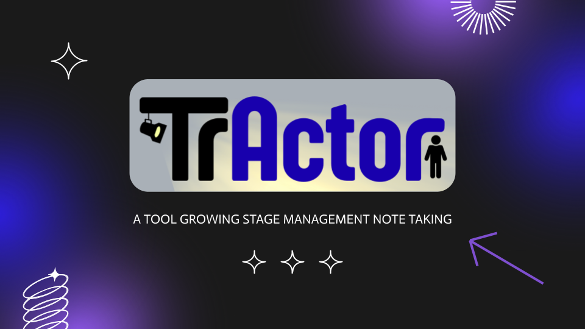

TrActor: Ultra-Wide Band Devices for Augmented Stage Management
TrActor is a low-cost wearable Ultra-Wide Band (UWB) tracking system that digitally records actors’ movements, providing a live stage map to improve collaboration, streamline workflows, and replace traditional paper notes for production teams. This project will be part of my senior capstone at WPI, the Major Qualifying Project (MQP).

Duration
Ongoing
Role
Automation Lead
Team Size
4 members
Overview
This project will be my Major Qualifying Project (MQP) at WPI in the 2026-2027 school year, which is a year-long capstone project required for graduation. The goal of the project is to develop an Ultra-Wide Band (UWB) tracking system that digitally records actors’ movements in order to provide better movement documention for increased collaboation and allow for real-time automation of lighting, sound, and scenic systems.
My work will be primarily focused on the Electrical and Computer Engineering and Robotics Engineering components of this project. I will be working with two other group members on the ECE components, and I will have sole responsibility for the RBE components.
I have begun research which will help inform the development of the project. Currently, I have been focusing on show networking, including working towards my Dante Level 1 and 2 certifications, and Open Sound Control (OSC). I have also been researching the use of UWB in indoor tracking applications, as well as looking into existing products that are similar to the one we are developing.
Motivation
I have been involved in theatre for almost my entire life. I started acting in musicals at age 6, and have never stopped being deeply involved in theatre in any way I can. In high school, with access to new (for me) technology, I pivoted to the world of technical theatre. Stage Management immediately became a passion of mine, and I have stage managed over 10 productions in the past 7 years.
Working in theatre technology has always been a dream of mine. At WPI I am involved in Lens and Lights (LNL), a student-run technical production group, where I have been able to gain experience in large-scale production management, lighting design and operation, and sound. I have also working in multiple other production roles over the past 7 years including lighting designer, sound designer, director, and producer.
It truly means a lot to me to be able to work on a theatre technology-based project for my MQP. I am not a theatre major, but being able to apply my knowledge of robotics and electrical and computer engineering to a field I am so passionate about is a dream come true. I am looking forward to the challenges and learning opportunities that this project will bring.
Project Description
Quad-discipline MQP in Electrical and Computer Engineering, Robotics Engineering, Mechanical Engineering, and Humanities and Arts - Theatre Concentration.
The Electrical and Computer Engineering component of this project will be research and development of Radio Frequency (RF) devices for Ultra-Wide Band (UWB), embedded systems design (including but not limited to programming microcontrollers in their use of Time Difference of Arrival (TDoA), integrating a variety of integrated circuits and components, as well as management of RF chips), and Printed Circuit Board (PCB) design (including but not limited to selection of components, design for smallest form factor, high power efficiency, and low power use).
The Robotics Engineering component of this project will involve the development of an online-based graphical user interface (GUI), assistance with the embedded systems design, developing interfacing and control protocols for theatrical system automation, and the development of a robotic prototype for controlling and simulating moving set pieces. Data from the UWB devices will be processed and made into a coordinate-based system to track movement and communicate with other theatrical devices (lighting console, sound console, set pieces, etc).
The Mechanical Engineering component of this project will include the research, design and development of a wearable enclosure housing the UWB device hardware that will be worn by performers in rehearsal settings. The device will be designed to focus on functionality, human comfortability and practical applicability within theatrical settings. The design methodology will follow a comprehensive engineering design workflow, including the establishment of design specifications, CAD models, materials selection, prototyping, and validation through testing.
Humanities and Arts - Theatre Concentration component of this project will include research of the stage management process in rehearsal and its inefficiencies, as well as correspondence, demos, and interviews with professional stage managers and stage management students. Additional focus may go into staging practices and technical theatre design.
Looking Ahead
This project will take place over the 2026-2027 academic year, so it is still in the early stages of development. I am currently focused on research and preliminary design, but as the project progresses I will be able to share more about the development process, challenges, and successes of the project. I am excited to see where this project goes and to share it with others who are interested in engineering theatre technology!